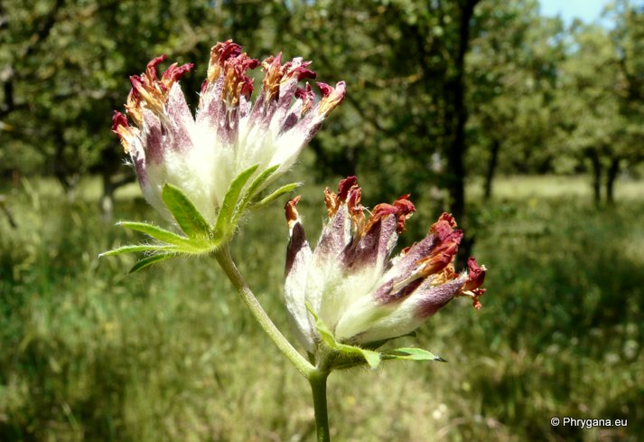
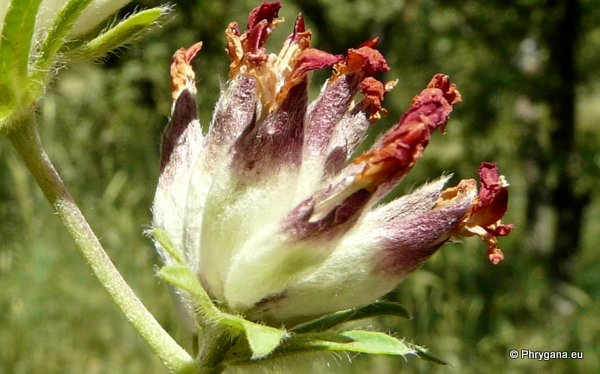

| PHRYGANA | Fauna | Flora | Galles | liste des espèces |
contact -
info - commentaires phrygana1 (at) gmail.com |
| Particularités crétoises | nouveautés | Mines | ressources naturelles |
| Anthyllis vulneraria subsp. rubriflora (DC.) ARCANG. |
| 465 | Flora | FABACEAE LINDl. | Loteae | Anthyllis L. |
|  Anthyllis vulneraria subsp. rubriflora Armeni (Rethymno) 10 mai 2012 |
| syn.: Anthyllis praepropera (A. Kern.) Beck | |
| (en) Mediterranean Kidney Vetch (fr) l'Anthyllide à fleurs rouges (it) Vulneraria a fiori rossi | |
| Plante annuelle buissonnante, poilue, un peu ligneuse à la base | |
| Feuilles: composées à 7-13 folioles elliptiques, la terminale beaucoup plus grande | |
| Tiges: ascendantes-dressées | |
| Fleurs: couronne rouge à pourpre; fleurs groupées en têtes globuleuses(10-15 mm), longuement pédonculées; calice à 5 dents inégales, brillant, à poils soyeux, enflé et rougeâtre à l'extrémité; deux bractées foliacées juste sous la tête | |
| Fruit: une gousse à 1-2 graines | |
| Hauteur: 10 - 40 cm | Type biologique: thérophyte ramifié ou hémicryptophyte bisannuel |
| Floraison: mars avril mai | |
| Altitudes: 0 - 1100 (-2000) m | |
| Statut en Crète: indigène | |
| Biotopes en Crète: pelouses sèches, terrains rocailleux, phrygana, terrains en friche, dolines | |
| Distribution: Europe méditerranéenne, Turquie, Proche-Orient | |
|  Anthyllis vulneraria subsp. rubriflora Armeni (Rethymno) 10 mai 2012 |
| 01 juiillet 2013 |
| © paul fontaine -- © Phrygana.eu 2007 -- 2013 |